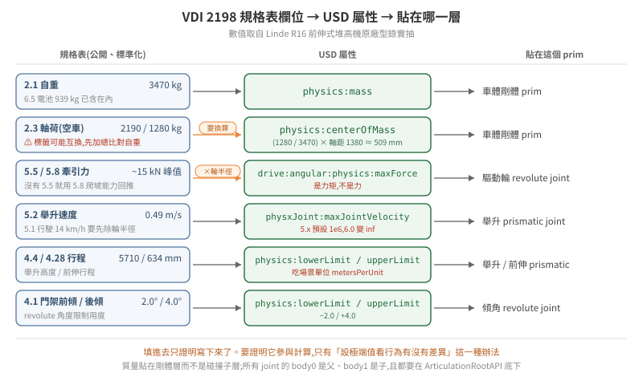

26 · 從規格表到會動的叉車:物理參數與 articulation 的非 GUI 建法
一台從資產庫或 CAD 來的叉車,進到 USD 裡通常只有幾何——沒有質量、沒有關節、沒有馬達。要讓它變成能被模擬的車,中間有兩件事要做:把真實世界的數字填進去,以及把零件之間的運動關係建起來。
這兩件事都可以完全不開 GUI。而且不開 GUI 反而比較好——設定值進了版控、能 review、能對不同版本重跑,GUI 拖出來的東西則只存在於那個檔案裡。
本篇把18 篇找到的參數與10 篇的分層原則接起來,走一遍完整流程:規格表欄位 → USD 屬性 → 貼在 prim 樹的哪一層 → 怎麼確認它真的生效。數值取自 VDI 2198 子頁實抽的 Linde R16 前伸式堆高機。

驗證狀態:屬性名稱與預設值取自 17 篇的 6.0.1 實機 schema 抽取,數值取自原廠 VDI 2198 型錄。本篇的程式碼未在本 repo 環境實機跑過,寫法依 OpenUSD 與 PhysX schema;凡是牽涉單位慣例的地方,文中都指出要用 §5 的方法自己驗一次,不要照抄。
1. 一台叉車在 USD 裡是什麼
先把「車」這個字拆掉。物理引擎不認識車,它認識的是一組剛體,用關節連起來,其中一些關節帶馬達。
一台前伸式堆高機至少是這幾個剛體:
/Forklift ← ArticulationRootAPI 貼這裡
├── chassis ← RigidBody:自重的大部分
│ └── collision/ ← CollisionAPI 貼子層(見 10 篇 §1)
├── drive_wheel ← RigidBody + revolute joint(驅動,帶 drive)
├── steer_link ← RigidBody + revolute joint(轉向,帶 drive)
├── load_wheel_l / _r ← RigidBody + revolute joint(從動,不帶 drive)
├── reach_carriage ← RigidBody + prismatic joint(前伸)
│ └── mast_tilt ← RigidBody + revolute joint(門架傾角)
│ └── fork_carriage ← RigidBody + prismatic joint(舉升)
│ └── fork_l / _r ← 叉齒,通常跟著 carriage 不另設關節
這棵樹決定了後面所有事情。分層錯了,參數怎麼調都不會對——質量掛在碰撞子層而不是剛體層,慣性張量會算出異常小的值,微小力矩就造成巨大角加速度,症狀是物件先瘋狂旋轉再飛走(10 篇 §1、§2)。
⚠ 閉合運動鏈的陷阱在這裡。真實叉車的門架傾角常由油壓缸推動,油壓缸兩端各自鉸接在車體與門架上——那是一個閉鏈。PhysX 容忍度較高,但 Newton 後端明確不支援閉合運動鏈(見 15 篇 §3.1 官方限制 #2)。模擬用的建模應該把油壓缸拿掉,直接用一個帶 drive 的 revolute 關節表達傾角,而不是把真實機構照搬。
2. 規格表欄位 → USD 屬性
VDI 2198 的好處是欄位編號標準化,每家廠商的型錄長得一樣(18 篇子頁)。下表把編號直接對到 USD:
| VDI | 欄位 | R16 實抽值 | USD 屬性 | 貼在哪 |
|---|---|---|---|---|
| 2.1 | 自重 | 3470 kg | physics:mass |
車體剛體 prim |
| 6.5 | 電池重量 | 939 kg | 併入 2.1,不另外加 | — |
| 2.3 | 軸荷(空車) | 2190 / 1280 kg | physics:centerOfMass |
車體剛體 prim |
| 1.9 | 軸距 | 1380 mm | 輪子 prim 的位置 | 幾何 |
| 5.5 / 5.8 | 牽引力 | ~5 kN 持續、~15 kN 峰值 | drive:angular:physics:maxForce |
驅動輪 revolute joint |
| 5.1 | 行駛速度 | 14 km/h = 3.889 m/s | 驅動關節速度上限 | 驅動輪 revolute joint |
| — | 舉升力(推導) | ~25 kN | drive:linear:physics:maxForce |
舉升 prismatic joint |
| 5.2 | 舉升速度(載重) | 0.49 m/s | 舉升關節速度上限 | 舉升 prismatic joint |
| 4.4 | 舉升高度 | 5710 mm | physics:lowerLimit / upperLimit |
舉升 prismatic joint |
| 4.1 | 門架前傾 / 後傾 | 2.0° / 4.0° | physics:lowerLimit / upperLimit |
傾角 revolute joint |
| 4.28 | 前伸行程 | 634 mm | physics:lowerLimit / upperLimit |
前伸 prismatic joint |
| 5.4 | 前伸速度 | 0.2 m/s | 前伸關節速度上限 | 前伸 prismatic joint |
| 4.22 | 叉齒 厚×寬×長 | 45×100×1150 mm | 幾何 | 叉齒 mesh |
三個需要換算而不是直接填的欄位,底下分開講。
2.1 軸荷 → 質心
規格表不給質心,但給了軸荷,而兩個軸荷加上軸距就唯一決定質心的縱向位置。對驅動軸取力矩:
質心離驅動軸的距離 = (另一軸的軸荷 / 總重) × 軸距
= (1280 / 3470) × 1380 mm
≈ 509 mm ← 從驅動軸往承載輪方向
⚠ 這一步最容易被規格表本身騙。R16 那份型錄的 2.3 / 2.4 兩行,with load 與 without load 的標籤是互換的——照字面用會讓驅動輪附著力算錯 3.6 倍。判別方法是拿算術對:標 "with load" 那行加起來等於 2.1 的自重,所以它其實是空車(18 篇子頁)。填任何一組軸荷之前,先把它加起來跟自重比一次。
質心設錯不會報錯,症狀是車在轉彎或載重時的翻覆行為不合理——而那個症狀不會指向質心。
2.2 牽引力 → 驅動關節的 maxForce
revolute joint 的 drive maxForce 是力矩,而規格表給的是力。中間差一個輪半徑:
驅動力矩上限 = 牽引力 × 輪半徑
輪半徑不在上表——它在型錄的輪胎/車輪那一段,這次沒抽。沒有輪半徑就沒有這個數字,不要用「差不多 0.3 公尺」湊,因為它直接線性放大或縮小你給馬達的力。
該填持續值(~5 kN)還是峰值(~15 kN),取決於你在模擬什麼:要重現「爬不上去」「推不動」這類飽和行為,填持續值;只是不想讓馬達變成無限力來源,填峰值。
⚠ 填之前先算一次數量級,確認你調的是不是限制因素。23 篇記過一個實例:需要的角加速度是 3.3 rad/s² 而關節可達 1100,差 330 倍——那種情況下調摩擦調到四倍真實值也只是杯水車薪,因為限制根本不在那裡。24 篇 §2 走過完整的「馬達扭力 vs 抓地力誰先飽和」比較。
2.3 速度 → 關節速度上限
行駛速度 14 km/h 是車速,驅動關節要的是角速度,同樣要除輪半徑(ω = v / r)。舉升與前伸是 prismatic,速度就是線速度,不用換算。
⚠ 單位慣例要自己驗,不要照抄。UsdPhysics 的 revolute 角度限制用度、prismatic 用場景單位,而關節速度上限的單位在不同版本、不同後端可能不同。判別方法是 §5 的第 4 級:設一個極端值,看行為有沒有可觀察的差異。填了一個數字然後回讀成功,證明不了它參與計算。
還有一個版本差異要注意:physxJoint:maxJointVelocity 在 5.x 的預設是 1000000,6.0 改成 inf(見版本速查表)。也就是 5.x 時代所有 articulation 關節都有一道隱含的速度上限,6.0 拿掉了。升上 6.0 之後叉齒開始把東西彈飛,先把這個屬性顯式設回有限值再談其他調參。
2.4 單位:填數字之前先問 metersPerUnit
上表的規格全是 mm,而場景的單位不一定是公尺。NVIDIA Warehouse 資產包實測是 metersPerUnit = 0.01(公分制),放進公尺制場景時父層會有 0.01 縮放(18 篇 §2)。關節行程、質心偏移、輪半徑全部吃這個單位,而填錯的症狀是行程差 1000 倍——大到會被當成「關節壞了」而不是「單位錯了」。
3. 三條寫進去的路
| 做法 | 適合 | 代價 |
|---|---|---|
改 .usda 文字 |
少量、一次性的修正 | .usd 是二進位 crate,要先轉文字;大檔難管 |
| Python USD API 離線寫檔 | 批次、可重跑、進版控 | 要寫腳本 |
啟動時 runtime patch(--exec) |
原檔不能動、同一份場景要餵不同版本 | 啟動慢幾秒;⚠ 不是所有屬性都吃 |
第三條有一個會讓人白花時間的邊界:runtime 寫入不一定被採用,而且剛體與關節的行為不一樣(17 篇 §2.5)。22 篇記過一個代價很高的實例——剛體屬性回讀成功但 PhysX 不採用,連帶讓 40 輪實驗的變因從未被施加,而每一輪都跑完了、都有結果、都被拿去分析。
所以建場域的預設應該是第二條:離線把值寫進檔案,runtime patch 留給診斷用。
離線寫檔的骨架(未實機驗證):
from pxr import Usd, UsdGeom, UsdPhysics, PhysxSchema, Gf
stage = Usd.Stage.Open("forklift.usd")
chassis = stage.GetPrimAtPath("/Forklift/chassis")
# 剛體 + 質量。質量貼在剛體層,不是碰撞子層(10 篇 §1)
UsdPhysics.RigidBodyAPI.Apply(chassis)
mass_api = UsdPhysics.MassAPI.Apply(chassis)
mass_api.CreateMassAttr(3470.0) # VDI 2.1 自重
mass_api.CreateCenterOfMassAttr(Gf.Vec3f(0.0, -0.509, 0.0)) # §2.1 推導,單位看 metersPerUnit
stage.GetRootLayer().Save()
⚠ 不要用 grep 判斷 crate 檔裡有沒有某個屬性。.usd 的字串 token 表會讓 schema 名稱出現在檔案裡,即使沒有任何 prim 真的貼了它——grep 得到不代表 authored(18 篇 §5)。要判斷就用 USD API 問 HasAuthoredValue()。
4. Articulation 怎麼建
4.1 在已匯入的 USD 上補(最常見)
CAD 轉出來的 USD 只有視覺幾何(03 篇 §2、21 篇)。補的順序是固定的,因為後一步依賴前一步:
- 確定 prim 樹,決定哪些節點是 link。⚠ CAD 轉換器預設開 instancing,
stage.Traverse()對 instanced 資產會回 0 mesh——數之前先問GetPrototypes()(21 篇)。 - 貼
RigidBodyAPI,每個 link 一個。碰撞體貼在子層,不要跟剛體貼同一個 prim。 - 貼質量。動態剛體必須有非零質量與慣量,否則 Newton 後端初始化會失敗(15 篇 §3.1 限制 #3)。沒授權質量時 PhysX 用「網格體積 × 1000 kg/m³」當預設,鋼構件因此輕 7.9 倍且不會有任何警告(18 篇 §0)。
- 建 joint prim,設
body0/body1。 - 貼
ArticulationRootAPI在包含整棵關節樹的 prim 上。⚠ 所有 joint 都必須屬於某個 articulation root,散裝 joint 在 Newton 後端不行(限制 #5)。
4.2 body0 / body1 的順序
這一條單獨拉出來講,因為它是兩版行為不同、而錯了不會報錯的那種:
body0要是父、body1要是子。PhysX 不在乎順序,只影響回傳值正負;Newton 硬性要求。而 PhysX 時代的資產常常反著寫。
出處是 15 篇 §3.1 的官方限制 #1。從 5.x 搬上來的叉車資產,這一項值得整批掃一次——PhysX 下跑得好好的東西,切到 Newton 會以「關節方向相反」或「初始化失敗」的形式出現,而症狀不會指向 body 順序。
4.3 從零建(最小可跑的骨架)
from pxr import Usd, UsdGeom, UsdPhysics, PhysxSchema, Gf
stage = Usd.Stage.CreateNew("forklift.usda")
UsdGeom.SetStageMetersPerUnit(stage, 1.0) # 先把單位釘死(§2.4)
UsdGeom.SetStageUpAxis(stage, UsdGeom.Tokens.z)
root = UsdGeom.Xform.Define(stage, "/Forklift")
UsdPhysics.ArticulationRootAPI.Apply(root.GetPrim())
# --- 驅動輪:revolute + 角度 drive ---
wheel = UsdGeom.Xform.Define(stage, "/Forklift/drive_wheel")
UsdPhysics.RigidBodyAPI.Apply(wheel.GetPrim())
j = UsdPhysics.RevoluteJoint.Define(stage, "/Forklift/joints/drive")
j.CreateBody0Rel().SetTargets(["/Forklift/chassis"]) # 父
j.CreateBody1Rel().SetTargets(["/Forklift/drive_wheel"]) # 子(§4.2)
j.CreateAxisAttr("Y")
drive = UsdPhysics.DriveAPI.Apply(j.GetPrim(), "angular")
drive.CreateTypeAttr("force")
drive.CreateMaxForceAttr(TRACTION_N * WHEEL_RADIUS_M) # §2.2:力矩,不是力
drive.CreateDampingAttr(...) # 速度控制靠 damping
drive.CreateStiffnessAttr(0.0) # 0 = 純速度控制
# --- 舉升:prismatic + 線性 drive + 行程限制 ---
lift = UsdPhysics.PrismaticJoint.Define(stage, "/Forklift/joints/lift")
lift.CreateAxisAttr("Z")
lift.CreateLowerLimitAttr(0.0)
lift.CreateUpperLimitAttr(5.710) # VDI 4.4,場景單位
lift_drive = UsdPhysics.DriveAPI.Apply(lift.GetPrim(), "linear")
lift_drive.CreateMaxForceAttr(25000.0) # ~25 kN
stage.GetRootLayer().Save()
drive 的 stiffness / damping 決定控制語意:stiffness 大是位置控制(PD 把關節拉向目標角度/位置),stiffness = 0 而 damping 大是速度控制。驅動輪要的是速度控制,舉升要的是位置控制。PD 公式與增益怎麼取見 09 篇;⚠ drive 力與增益要等比例動,只放大其中一個等於改了控制器的行為。
兩個容易漏的 articulation 參數(17 篇 §3.6):
physxArticulation:solverVelocityIterationCount預設 1,而官方對複雜關節建議 16。叉車這種多關節帶負載的樹,預設值偏低。physxJoint:armature預設 0,是致動器的等效慣性,可以穩定高增益驅動。叉齒抖動時這是比調摩擦更該先試的旋鈕。
4.4 要不要走 URDF
ROS 生態來的機器人已經有 URDF 的話,用官方 importer(isaacsim.asset.importer.urdf)把 link/joint 結構直接轉成 articulation 最省事(03 篇 §2)。
但叉車這類「資產庫或 CAD 來的 USD,幾何已經在了、只缺物理」的情形,繞去寫 URDF 再轉回來是多一次轉換與一次資訊損失。直接在 USD 上補比較短,而且改的東西跟最後跑的東西是同一份。
5. 怎麼確認它真的生效
沿用 17 篇 §5 的四級可信度——只有第 4 級能證明參數參與計算:
| # | 方法 | 能證明 |
|---|---|---|
| 1 | 在場景檔裡 grep 得到 | 只證明寫下來了(而且對 crate 檔連這個都不成立) |
| 2 | 離線讀出 authored value | 值正確、格式沒錯 |
| 3 | 對跑著的模擬用探針讀回 | 載入後仍是這個值 |
| 4 | 設極端值,行為有可觀察的差異 | 它真的參與計算 |
叉車專屬的三個行為檢查:
- 質量對不對 → 讓它自由落到地面,量沉陷量與接觸力。質量差一個數量級時沉陷行為明顯不同。
- 質心對不對 → 用叉齒舉起額定載重,看有沒有翻覆傾向。質心設在幾何中心的車,載重時的行為會比真車穩得多。
- 驅動力上限有沒有生效 → 給一個爬坡或推重物的情境,確認它在預期的地方推不動。推得動代表上限沒生效或設太大——而「一直都推得動」在功能測試裡看起來像成功。
第 3 條是最容易被跳過的:飽和行為要故意去撞上限才驗得到,而正常的功能測試從不會走到那裡。這跟 12 篇講的是同一件事——沉默相容於太多個世界。
6. 檢查清單
- [ ] prim 樹畫出來了,剛體層與碰撞層分開
- [ ] 每個 link 有
RigidBodyAPI,質量貼在剛體層而不是碰撞子層 - [ ] 自重用 VDI 2.1,而且確認電池重量(6.5)已包含在內
- [ ] 填軸荷之前,先把兩軸加起來跟自重比對一次(標籤可能互換)
- [ ] 質心由軸荷推導,不是放在幾何中心
- [ ] 場景
metersPerUnit確認過,所有行程/偏移/半徑用同一個單位 - [ ] 驅動
maxForce是力矩(牽引力 × 輪半徑),不是直接填牽引力 - [ ] 所有 joint 的
body0是父、body1是子 - [ ] 所有 joint 都在某個
ArticulationRootAPI底下 - [ ] 沒有閉合運動鏈(油壓缸用單一 drive 關節取代)
- [ ]
solverVelocityIterationCount從預設 1 提高 - [ ] 升 6.0 的話,
physxJoint:maxJointVelocity顯式設回有限值 - [ ] 每個關鍵參數都用「設極端值看行為差異」驗過,不是只回讀
延伸閱讀:18 建場域時物理參數要去哪裡找(來源優先序與估算法)、10 場景資產的物理結構(分層與材質綁定)、24 把「會瞬移的底盤」換成「真的有輪子的車」(輪系底盤的前提鏈與控制)、17 6.0 的物理調參(完整參數表與生效條件)。